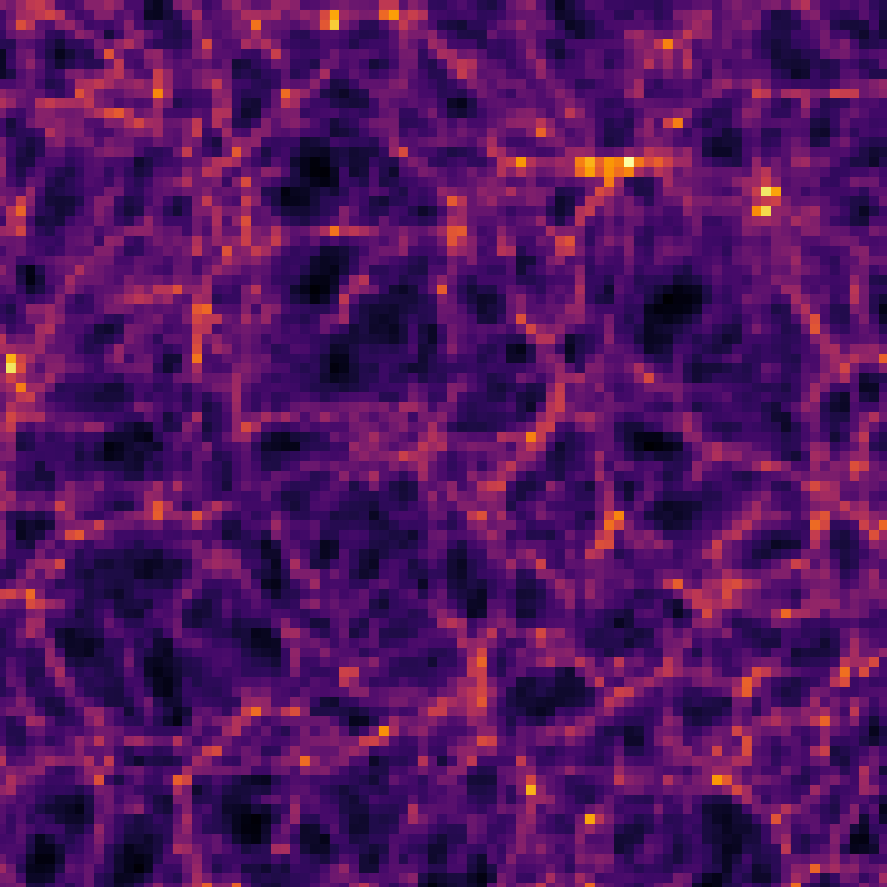

Cosmic Web Classification: NEXUS+ vs. DisPerSE
- Field
- Computational Cosmology; Cosmic Web
- Research
- Comparing two different algorithms investigating the cosmic web.
- Purpose
- The cosmic web defines the structure of our Universe on the largest scales. Understanding how this structure emerges lets us peer into the nature of our Universe, namely the way gravity acts on the largest scales and how it shapes our Universe.

